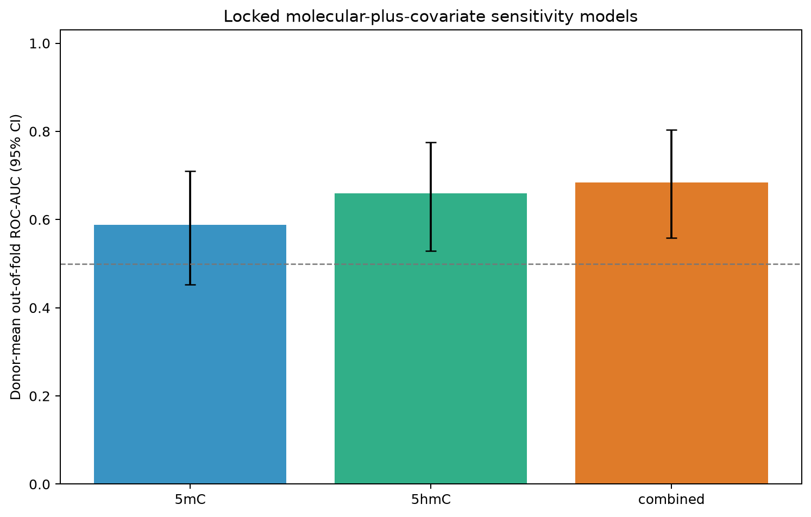
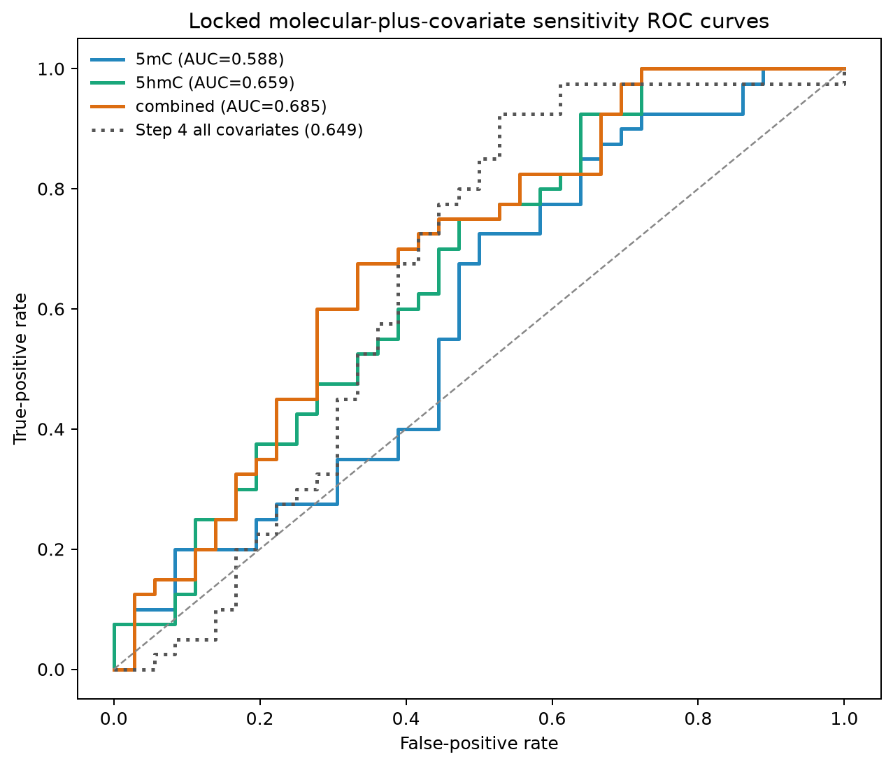
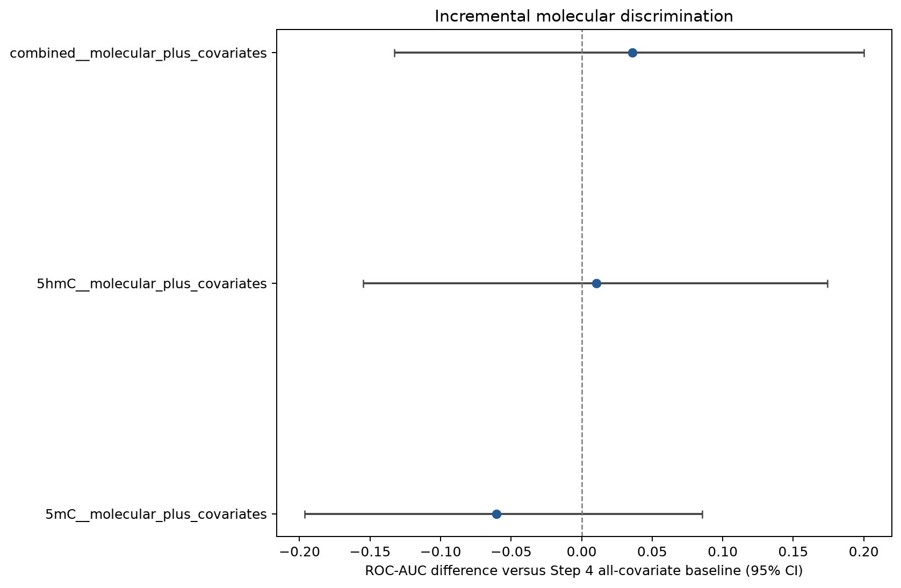
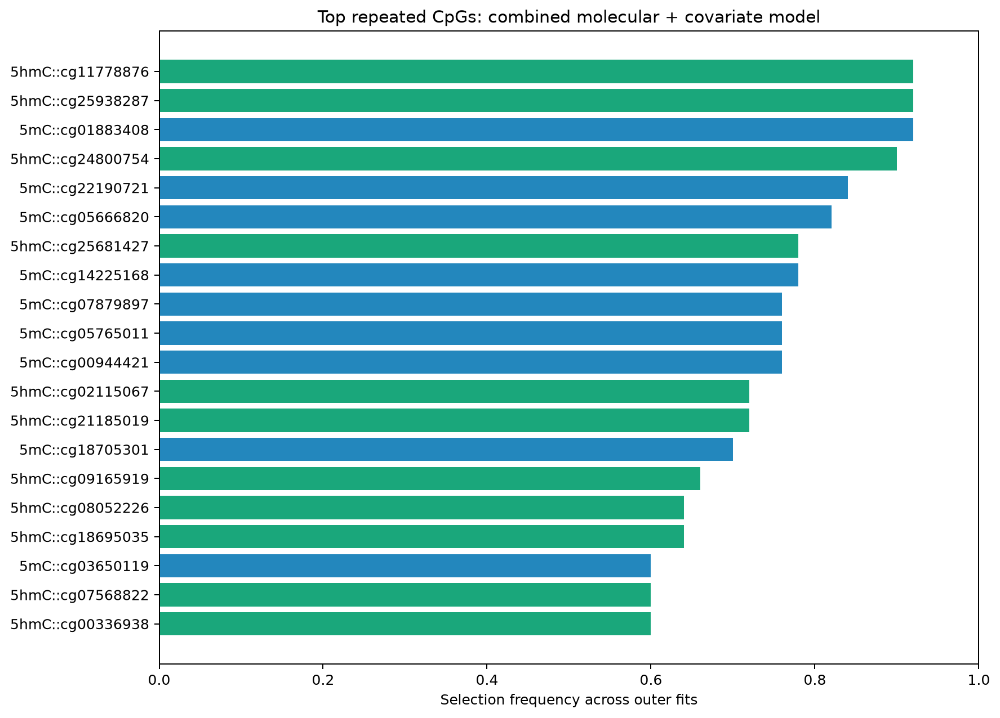

Leakage guardrail: outer-test donors did not contribute to variance pools, missingness rules, imputation, scaling, supervised CpG selection, residualization, or tuning.
Interpretation: this cohort overlaps the primary cohort and is a robustness analysis, not independent external validation. This report estimates prediction, not causality.
Three modalities × the Step 6-locked molecular-plus-covariate view; frozen 5×10 outer CV and four inner folds. Combined models select the stated feature count separately from each modality.
| modality | view | roc_auc_donor_mean_oof | roc_auc_bootstrap_low | roc_auc_bootstrap_high | pr_auc_donor_mean_oof | balanced_accuracy_donor_mean_oof | mcc_donor_mean_oof |
|---|---|---|---|---|---|---|---|
| 5hmC | molecular_plus_covariates | 0.6590 | 0.5285 | 0.7750 | 0.6595 | 0.6056 | 0.2108 |
| 5mC | molecular_plus_covariates | 0.5882 | 0.4527 | 0.7098 | 0.6199 | 0.5528 | 0.1054 |
| combined | molecular_plus_covariates | 0.6847 | 0.5583 | 0.8042 | 0.6613 | 0.6472 | 0.2950 |


| comparison_family | model_a | model_b | roc_auc_difference_a_minus_b | bootstrap_low | bootstrap_high | bootstrap_two_sided_p | bootstrap_iterations | fdr_bh_within_family |
|---|---|---|---|---|---|---|---|---|
| molecular_vs_covariate_baseline | 5hmC__molecular_plus_covariates | all_covariates | 0.0104 | -0.1549 | 0.1743 | 0.8646 | 2000 | 0.8646 |
| molecular_vs_covariate_baseline | 5mC__molecular_plus_covariates | all_covariates | -0.0604 | -0.1965 | 0.0855 | 0.4348 | 2000 | 0.8612 |
| molecular_vs_covariate_baseline | combined__molecular_plus_covariates | all_covariates | 0.0361 | -0.1326 | 0.2000 | 0.6887 | 2000 | 0.8612 |

| modality | view | feature_name | selected_outer_fits | selection_frequency | coefficient_mean_when_selected | positive_coefficient_fraction |
|---|---|---|---|---|---|---|
| combined | molecular_plus_covariates | 5hmC::cg11778876 | 46 | 0.9200 | 0.2121 | 1.0000 |
| 5mC | molecular_plus_covariates | 5mC::cg01883408 | 46 | 0.9200 | -0.1956 | 0.0652 |
| combined | molecular_plus_covariates | 5mC::cg01883408 | 46 | 0.9200 | -0.1124 | 0.0652 |
| combined | molecular_plus_covariates | 5hmC::cg25938287 | 46 | 0.9200 | 0.2497 | 1.0000 |
| 5hmC | molecular_plus_covariates | 5hmC::cg24800754 | 45 | 0.9000 | -0.2428 | 0.0000 |
| 5hmC | molecular_plus_covariates | 5hmC::cg25938287 | 45 | 0.9000 | 0.4437 | 0.9778 |
| combined | molecular_plus_covariates | 5hmC::cg24800754 | 45 | 0.9000 | -0.1101 | 0.0000 |
| 5hmC | molecular_plus_covariates | 5hmC::cg11778876 | 44 | 0.8800 | 0.3061 | 1.0000 |
| 5mC | molecular_plus_covariates | 5mC::cg22190721 | 43 | 0.8600 | -0.1634 | 0.0698 |
| combined | molecular_plus_covariates | 5mC::cg22190721 | 42 | 0.8400 | -0.1303 | 0.0238 |
| combined | molecular_plus_covariates | 5mC::cg05666820 | 41 | 0.8200 | -0.0845 | 0.0244 |
| 5mC | molecular_plus_covariates | 5mC::cg05666820 | 39 | 0.7800 | -0.0783 | 0.1538 |
| combined | molecular_plus_covariates | 5mC::cg14225168 | 39 | 0.7800 | 0.1699 | 0.9744 |
| 5mC | molecular_plus_covariates | 5mC::cg14225168 | 39 | 0.7800 | 0.3864 | 1.0000 |
| combined | molecular_plus_covariates | 5hmC::cg25681427 | 39 | 0.7800 | -0.2494 | 0.0000 |
| combined | molecular_plus_covariates | 5mC::cg07879897 | 38 | 0.7600 | 0.3179 | 1.0000 |
| 5mC | molecular_plus_covariates | 5mC::cg05765011 | 38 | 0.7600 | -0.0321 | 0.6842 |
| combined | molecular_plus_covariates | 5mC::cg05765011 | 38 | 0.7600 | 0.0938 | 0.8947 |
| combined | molecular_plus_covariates | 5mC::cg00944421 | 38 | 0.7600 | -0.0527 | 0.1316 |
| 5hmC | molecular_plus_covariates | 5hmC::cg25681427 | 38 | 0.7600 | -0.3448 | 0.0000 |
| 5hmC | molecular_plus_covariates | 5hmC::cg02115067 | 37 | 0.7400 | 0.3033 | 0.9189 |
| 5mC | molecular_plus_covariates | 5mC::cg07879897 | 37 | 0.7400 | 0.4940 | 1.0000 |
| 5hmC | molecular_plus_covariates | 5hmC::cg21185019 | 37 | 0.7400 | 0.1580 | 0.9189 |
| combined | molecular_plus_covariates | 5hmC::cg02115067 | 36 | 0.7200 | 0.1146 | 0.9722 |
| combined | molecular_plus_covariates | 5hmC::cg21185019 | 36 | 0.7200 | 0.1297 | 1.0000 |
| combined | molecular_plus_covariates | 5mC::cg18705301 | 35 | 0.7000 | 0.2399 | 1.0000 |
| 5mC | molecular_plus_covariates | 5mC::cg00944421 | 34 | 0.6800 | -0.0765 | 0.1176 |
| combined | molecular_plus_covariates | 5hmC::cg09165919 | 33 | 0.6600 | -0.3391 | 0.0000 |
| 5hmC | molecular_plus_covariates | 5hmC::cg09165919 | 33 | 0.6600 | -0.5802 | 0.0000 |
| 5hmC | molecular_plus_covariates | 5hmC::cg18695035 | 32 | 0.6400 | 0.2783 | 0.9688 |

Interpret this cohort only together with the primary Clean-77 and the other prespecified sensitivity cohort. Do not select a single lucky repeat or outer fold.